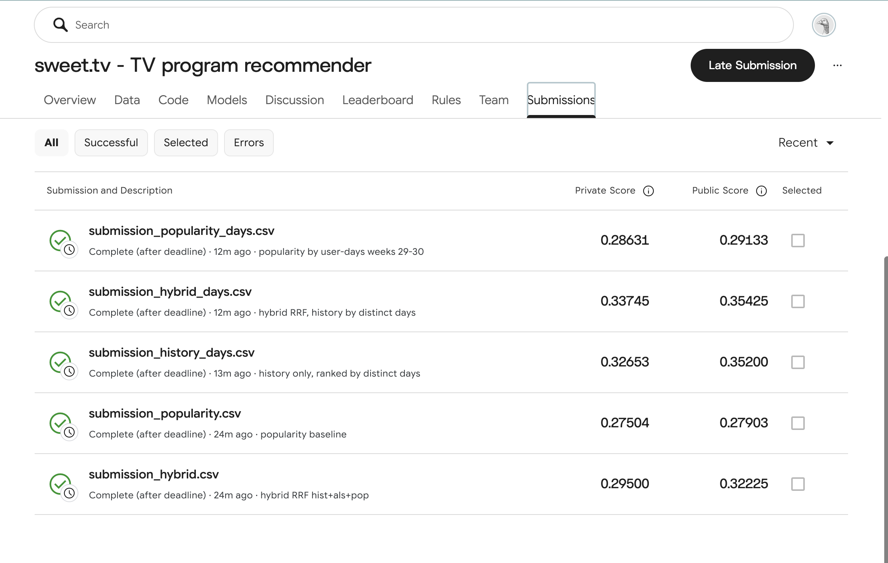

Author: [First Name Last Name] · Date: 2026-10-24
Competition: Kaggle sweettv-tv-program-recommender [4] · Code: https://github.com/Qwidji/sweettv-recsys
This work addresses the sweet.tv Kaggle competition: given a TV viewing log of 4,914 users over ISO weeks 11–30 of 2020 and the broadcast schedule, the task is to predict 5 programmes for each of 1,260 users for weeks 31–42, evaluated by MAP@5. The log is converted into user–programme interactions by intersecting viewing intervals with broadcast intervals, using a 300-second threshold. Under temporal validation (training on weeks 11–20, testing on weeks 21–30) we compare popularity, user history, ALS for implicit feedback, a TF-IDF content-based model, and a hybrid based on weighted reciprocal rank fusion. The best result is obtained by the hybrid in which history is ranked by the number of distinct viewing days: MAP@5 of 0.686 on validation and 0.354 / 0.337 public / private score on Kaggle (late submission). Replacing total viewing time with the number of days improved results both on validation and on Kaggle.
The operator sweet.tv provided a viewing log of linear TV channels and an archive of the TV schedule. For each of the 1,260 users in submission.csv, the task is to output 5 programme identifiers (tv_show_id) that the user will watch in the next period; quality is measured by MAP@5 [4].
Properties of the task that shaped the solution:
vsetv_id) and the viewing interval; the programme can only be recovered by matching against the broadcast schedule.tv_show_id = 0, i.e. the programme is unlabelled.Contributions:
src/join.py, src/eval.py, src/predict.py;Implicit feedback. Hu, Koren and Volinsky [1] proposed matrix factorization for implicit feedback: observed quantities such as viewing time are turned into a binary preference and a confidence weight, and the model is trained by alternating least squares (ALS). Their experiments were conducted on digital television viewing data. We use the ALS implementation from the implicit library [3]. The interaction weight is a logarithm of viewing time, similar in spirit to the logarithmic confidence scaling in [1].
Content-based recommendation. Lops, de Gemmis and Semeraro [2] describe content-based recommender systems: a user profile is built from the features of consumed items, and candidates are ranked by similarity to the profile; a standard representation is TF-IDF vectors with cosine similarity. Our content model follows this scheme using schedule metadata: category, genres, director and actors.
| File | Rows | Contents |
|---|---|---|
dataset11-30.csv |
5,821,987 | user_id, vsetv_id, start_time, stop_time, duraton |
export_arh_11-20/21-30/31-42-final.csv |
1,074,235 / 1,074,394 / 1,295,378 | schedule: channel, start, duration, tv_show_id, category, genres, director, actors |
submission.csv |
1,260 | user_id, 5 space-separated ids |
%Y-%m-%d %H:%M:%S in the log, %d.%m.%Y %H:%M:%S in the schedule.Matching (src/join.py):
start + duration.(channel_id, start_time) are removed (1 found).overlap = min(stop, end) − max(start, prog_start) is computed.A pair with overlap ≥ 300 s counts as a “view”. There are 4,610,846 such pairs, of which 51.6% fall on labelled programmes. Only these are stored in interactions.parquet: 2,378,699 rows, 4,890 users, 4,272 programmes. The median overlap in these data is 1,193 s.
Time zone check. On 200,000 random viewings, we measured the share of starts within ±60 s of the start of any programme when shifting the schedule by −3…+3 h. The maximum is at zero shift (0.0357), but at +1…+3 h the share is almost the same (0.0351–0.0355), so the check only fails to contradict the absence of a shift. The schedule was not adjusted.
All methods produce a ranked list from the candidate pool. If there are fewer than five candidates or the user has no history, the list is padded with popular programmes. Repeats are allowed.
log1p(Σ overlap_sec / 60), 20 iterations, random_state = 42. Grid: factors ∈ {32, 64}, regularization ∈ {0.01, 0.1}. Scores are dot products of factors over pool programmes present in training; already watched programmes are not filtered.cat=, genre=, dir=, act= tokens, vectorized with TF-IDF and L2 normalization. The user profile is the weighted mean of the vectors of watched programmes (weights as in ALS). Candidates are ranked by cosine similarity.score(i) = Σ_m w_m / (k0 + rank_m(i)), where m ∈ {History, ALS, Popularity}.
Validation (src/eval.py):
tv_show_id ≠ 0 from the 21-30 schedule, 6,363 programmes, of which 2,154 appear in training.Final submissions (src/predict.py):
submission_hybrid_days.csv, private 0.33745.Environment: Python 3.13.5, numpy 2.5.3, pandas 3.0.6, scipy 1.18.1, scikit-learn 1.9.1, implicit 0.7.3; Apple M1, 8 CPU, 8 GB RAM. Seed = 42.
Table 1. MAP@5 on validation and on Kaggle. Time covers training and prediction on validation.
| Method | Parameters | Valid, all | Valid, test | Kaggle public | Kaggle private | Time, s |
|---|---|---|---|---|---|---|
| Popularity | unique viewers, wk 11–20 | 0.61945 | 0.73167 | — | — | 0.1 |
| Popularity | unique viewers, wk 19–20 (Kaggle: 29–30) | 0.62279 | 0.73417 | 0.27903 | 0.27504 | 0.0 |
| Popularity-days | (user, day) pairs, wk 19–20 (29–30) | 0.61945 | 0.73167 | 0.29133 | 0.28631 | 0.0 |
| History | by overlap | 0.56280 | 0.67345 | — | — | 0.2 |
| History-days | by number of days | 0.65310 | 0.76823 | 0.35200 | 0.32653 | 0.4 |
| ALS | f=32, reg=0.01 | 0.48842 | 0.54516 | — | — | 1.6 |
| ALS | f=32, reg=0.1 | 0.48941 | 0.54618 | — | — | 1.5 |
| ALS | f=64, reg=0.01 | 0.41814 | 0.45097 | — | — | 2.6 |
| ALS | f=64, reg=0.1 | 0.41907 | 0.45197 | — | — | 2.6 |
| Content | TF-IDF | 0.17469 | 0.19350 | — | — | 4.4 |
| Hybrid | k0=10, w_als=0.5, w_pop=0.5 | 0.65976 | 0.77418 | 0.32225 | 0.29500 | 4.2 (grid) |
| Hybrid-days | same weights, History-days | 0.68553 | 0.79766 | 0.35425 | 0.33745 | 0.1 |
Observations:

Figure 1. Kaggle: all submissions are late submissions (the competition closed on 2020-11-21); scores are returned by Kaggle but do not appear on the leaderboard. The final (designated) submission is submission_hybrid_days.csv, private 0.33745.
For a heavy test user (6,015 interactions, 634 programmes in training) and a light one (1 interaction), we print the top-5 of each method (full tables in results.md).
| Method | AP@5, heavy | Already watched (of 5), heavy | AP@5, light | Already watched (of 5), light |
|---|---|---|---|---|
| Popularity | 1.0000 | 5 | 0.1000 | 0 |
| History-days | 1.0000 | 5 | 0.0667 | 1 |
| ALS | 0.0000 | 4 | 0.0000 | 1 |
| Content | 0.1000 | 3 | 0.0000 | 1 |
| Hybrid-days | 1.0000 | 5 | 0.0500 | 1 |
Heavy user. Popularity, History-days and Hybrid-days return news and recurring programmes (“TSN”, “Fakty. Utro”, “Segodnya”); all five are in the user’s truth. ALS suggests films and entertainment programmes that the user watched in training but not in validation.
Light user. All methods except Popularity put the only watched film first. It is not in the truth, so the single hit (“Fakty. Utro”) moves down the list.
[1] Y. Hu, Y. Koren, C. Volinsky. Collaborative Filtering for Implicit Feedback Datasets. In Proc. IEEE International Conference on Data Mining (ICDM), 2008.
[2] P. Lops, M. de Gemmis, G. Semeraro. Content-based Recommender Systems: State of the Art and Trends. In Recommender Systems Handbook, Springer, 2011.
[3] B. Frederickson. implicit: Fast Python Collaborative Filtering for Implicit Datasets. https://github.com/benfred/implicit
[4] sweet.tv — TV program recommender. Kaggle competition. https://www.kaggle.com/competitions/sweettv-tv-program-recommender
[5] G. V. Cormack, C. L. A. Clarke, S. Buettcher. Reciprocal Rank Fusion outperforms Condorcet and Individual Rank Learning Methods. In Proc. ACM SIGIR Conference on Research and Development in Information Retrieval, 2009.